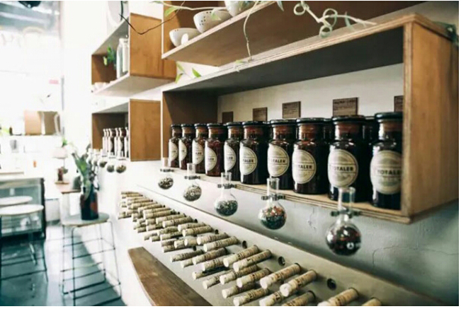

详情
有家店| T Totaler:走遍三十多个国家就为做这杯茶
#跨界鉴赏#
T Totaler成功之处在于它温和中间的主张即吸引了厌倦每天喝咖啡的人，也化解了宿醉后想续杯发现早上酒吧打样的尴尬。在T Totaler，新的一天都是从一杯热茶开始。
▲ T Totaler从名字就可以看出来，他与茶有着密切关系
悉尼的常态在闹铃和咖啡机的交响中醒来。
遍布大街小巷的咖啡店孕育了这里盛行的咖啡文化，以至于对在这座城市生活的人来说，不喝咖啡，就是一种隐形的社交障碍，在这里，开一家店经营咖啡比经营茶容易得多。有趣的是，悉尼又是一座如此多元包容的城市，无论你的味蕾信仰的是“咖啡原教旨主义”还是“极端酒精主义”，你都会惊喜的发现同好，并且同大家相处融洽。

▲ 在强烈的咖啡文化背景中，T Totaler为人们提供了多一种选择
在这样的环境里，T Totaler的存在为你的社交选择在咖啡馆和酒吧的两极分化间提供了另一种可能：既不同于咖啡馆的千篇一律，也不同于酒吧的一醉方休。T Totaler成功之处在于它温和之间的主张即吸引了厌倦每天喝咖啡的人，业化解了宿醉后想续杯发现早上酒吧打样的尴尬。在T Totaler，新的一天都是从一杯热茶开始的。
▲ 不因可以品尝，对于喜爱的茶还可以直接买走
New Town是嬉皮士和街头艺人的聚集地，也是艺术家和手作人的试验场和创意坊，如果要有一个地方适合一切挑战传统或不合常规的新事物生长，在这里是最佳选择，而T Totaler对于咖啡馆林立的New Town来说，算是一个温和的反抗。它并不位于闹市街头，小小的店面也很容易被匆忙而粗心的游客所错过，但这也增加了你误打误撞闯入后的惊喜，而对慕名而来的人来说，T Totaler的一切都会让你决定不虚此行。
▲ T Totaler不因提供各类茶，同时也提供点心
在植物香气氤氲的店内，一眼就能看到整齐排列着试管与棕色玻璃瓶的木架，这些瓶瓶罐罐里面装的都是各种茶叶，根据不同的茶叶有着不同的冲泡方法。而在陈列架架另一边，可以看到茶叶是如何在吧台上被冲泡成香气四溢的饮品。T Totaler吧台的与众不同之处在于它像化学实验台一样上面摆放着烧杯，量杯，天平……正在加热的蒸馏器便是店里植物香气的来源，水蒸气顺着与蒸馏器连接到导管凝聚成棕褐色液体一股股流到烧杯里。除了茶，在T Totaler早餐和下午茶都成为可能，轻松愉悦的氛围也使人愿意在这里多停留一会。如果对喝的某款茶品感兴趣，也可以挑选你喜欢的口味买回家。
▲ Amber和Paul走访过30多个国家，把他们对茶的认识都融入到T Totaler
这家小店很难从功能上来定义：茶，是T Totaler的唯一主题，但围绕这个主题，品牌创始人Amber做了很多有趣深入的延伸：T Totaler品牌的成立正是源自她个人对茶和茶艺的热爱，为了找寻不同风味的茶叶和烘焙茶叶的方法，Amber和丈夫Paul走访了全球30多个国家采风考察，并将学习到的手法融入到了T Totaler茶叶的制作中，所以T Totaler推出的多种茶各自味道和工艺都有其独特之处；Amber和T Totaler对本土化和有机产品的坚持是澳洲众多手工艺人和本土品牌的代表和趋势。T Totaler的茶叶原料都是澳洲本土茶园生产，他们甚至开辟了一块小花园自己栽种培养所需植物原料，所以他们的茶叶从栽种到烘焙都是手工作业。这和天然有机一样，也是他们引以为豪的一件事。
▲ T Totaler从市集开始，他一直与New Town保持着调性
与此同时，T Totaler也根据时节展开不同主题的茶艺workshop，吸引了许多对茶艺与兴趣的人参加，教育更多的人学会并喜欢品茶是Amber创立T Totaler品牌的初衷之一。并且这种基于兴趣的workshop本身就具备社交属性，从而使T Totaler自然而然的成了他们聚会社交的聚居地，店内布置的一张木质大长桌就是为了让互不认识的客人们能够坐下来交流时少一些隔阂，在温热茶香的氛围中尽快熟络起来。
T Totaler的创业历程是怎样的？
.Amber:我们最开始是从市集做起来的，比如我们经常参加zhelidNew Town Festival。T Totaler在市集阶段慢慢积累了一些人气，这也坚定了我开一家实体店的想法，所以等到时机成熟了后，我们就开了这家小店。好在目前为止，我们对现在的经营现状都比较满意。
▲ T Totaler的位置决定了这个品牌的起点
你觉得T Totaler的成功和所在的New Town有什么关系？
.Amber:我觉得有很大关系。New Town festival以及这里定期举办的各种市集在创业前期给我们很大帮助，对于像T Totaler这样刚起步的小品牌来说，让更多的人认识我们非常重要。在市集我们认识到了许多新朋友，这也是New Town独有的氛围吧，大家都很愿意尝试新鲜事物也喜欢结识新朋友，所以在选择实体店位置的时候，我们就决定把这里作为我们的起点。
▲ T Totaler已经有了自己的第一个孩子
 7
7  1
1